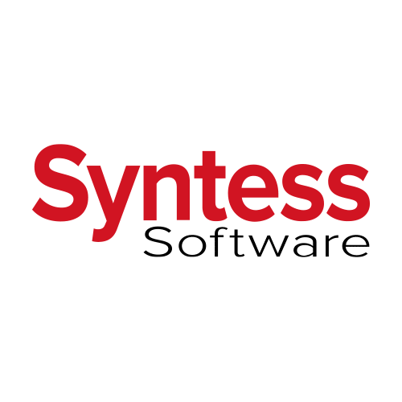

Jan de Mul
Jan de Mul
HBO-I event
- Organisatie en cultuur:
Avanade is een bedrijf dat nauw samenwerkt met Microsoft. Het bedrijf word ingehuurd door andere
bedrijven om de Microsoft techniek in hun bedrijf op te zetten. Zo hebben ze in de VS verschillende
ziekenhuizen volledig gemoderniseerd en met elkaar gekoppeld zodat specialisten bereikbaar zijn voor
veel meer patiënten.
- Functie:
Een van de dingen waar de mensen van Avanade geïnteresseerd in zijn is blockchain. Voor nu heeft het
nog geen directe toepassing maar zij denken dat blockchain de toekomst kan zijn voor vele bedrijven.
Daarom zijn ze nu al bezig mensen te werven die ook een toekomst zien in blockchain.
- De technieken:
Avanade adverteert dat je bij hun in de top gaat werken van Microsoft technologie. En dat is zeker
waar, Avanade is een werkt onder Microsoft en gebruikt dus ook voornamelijk Microsoft technologie in
hun bedrijf.

- Organisatie en cultuur:
Rockstar IT is een soort uitzendbureau voor (afstudeer) stages. Ze verzamelen stage plekken van
bedrijven en gaan dan kijken welke studenten het best op die plekken passen. Ze zijn alleen wel meer
dan alleen een uitzend bureau, ze onderhouden ook groep carrière coaches die je kunnen helpen met je
carrière keuzes. Verder organiseren ze ook events die bedoeld zijn om hun studenten kennis te laten
maken met de nieuwste technieken.
- Functie:
Rockstar IT is een stage uitzendbureau waardoor functies (of stages) ver uit elkaar kunnen lopen. Het
goede aan het bedrijf is dat ze speciaal gaan proberen kijken welke stage het best past bij welke
student.
- De technieken:
De technieken die Rockstar IT zelf gebruikt is niet aan bot gekomen en is waarschijnlijk ook niet
verassend interessant. Wat wel heel erg interessant is, is hun events. Deze events worden georganiseerd
om nieuwe technieken bekend te maken bij de aangesloten studenten en bedrijven. Deze events kunnen
bestaan uit beurzen, lezingen of workshops.
- Organisatie en cultuur:
Dong IT is gespecialiseerd in cybersecurity en web development. Ze ontwikkelen grote, complexe
webapplicaties en hun etnische hackers voeren penetratietesten uit voor meer dan 100 klanten.
- Functie:
Dong IT is voornamelijk gefocust op cybersecurity en werken dus veel met computer veiligheid experts en
etnische of white-hat hackers.
- De technieken:
Dong IT voert hun werkt vooral uit door penetratietesten te doen. Een bedrijf huurt Dong IT in om hun
beveiliging te checken, dan gaan ze proberen in te breken in het systeem. Na afloop leveren ze een
rapport aan met aanbevelingen voor het bedrijf.
- Organisatie en cultuur:
Manssystems is een Low-code applicatie ontwikkelaar die ICT en bedrijfskunde combineert. Het bedrijf
probeert ICT meer toegankelijk te maken voor “gewone” mensen door gemakkelijk tools te maken die mensen
zonder een IT achtergrond ook kunnen gebruiken om mooie en professionele applicaties te maken.
- Functie:
Als een bedrijf Manssystems inhuurt gaan hun kijken hoe het bedrijf het best kan profiteren van de al
bestaande tools. Daarna raden ze bepaalde tools aan of maken ze nieuwe gespecialiseerde tools voor dat
bedrijf.
- De technieken:
Manssystems werkt nauw samen met Mendix, Mendix is een opensource platform dat gebruikt kan worden om
low-code applicaties te maken. Mendix is Manssystems hun primair product.
- Organisatie en cultuur:
ETTU is Microsoft georiënteerd ICT specialisten team zij doen onderzoek naar de mogelijkheden in
moderne technologie. Eén van hun projecten is hun HoloLens project, in dit project zijn ze opzoek wat
de toepassingen kunnen zijn van VR technieken.
- Functie:
ETTU word gesponsord door Microsoft de nieuwste technieken te ontwikkelen en om zo de toekomst te
“voorspellen”. Functies binnen het bedrijf zijn dat ook behoorlijk uiteenlopend en erg gespecialiseerd.
Vaak werken specialisten er voor een project totdat het project is afgerond en dan gaan ze verder naar
een ander bedrijf of ander project.
- De technieken:
ETTU gebruikt voor ieder project andere technieken maar voor het HoloLens project word natuurlijk
voornamelijk VR technologie gebruikt en aangezien ze een partner zijn van Microsoft worden er dus
vooral Microsoft producten gebruikt binnen het bedrijf.
Bedrijvensafarie
Voor het bezoek aan Omoda hebben we een kijkje kunnen nemen in het hoofdkantoor van het bedrijf. Hier krijgen ze alle bestellingen binnen van schoenen fabrikanten. Na binnenkomst worden de pakketten gesorteerd door een grote machine en een slim computerprogramma. Dan worden ze opgeslagen of door gestuurd naar winkels of online-shoppers. De twee ICT’ers die we hebben ontmoet tijdens het bezoek waren verantwoordelijk voor de technologie die achter het plannen en sorteren van de pakketten zit.
Het bezoek aan Your surprise was zeker (een van) de interessantste bezoeken. Het is een web winkel die gepersonaliseerde cadeautjes maakt. Om dit bedrijf goed draaiende te houden is er veel slimme techniek nodig. Om te beginnen moet er een website zijn waar je alle cadeautjes kan personaliseren, dan moet de bestelling worden verzonden naar het bedrijf. Hier moet het nog rauwe cadeau worden bewerkt en daarna word het naar de klant verstuurd. Hier zit een hele reeks aan ICT gerelateerde techniek achter die altijd feilloos moet werken anders krijgen mensen de verkeerde cadeaus.
Het bezoek aan Syntess software voelde redelijk ingestudeerd aan en was niet enorm leerzaam. Het bedrijf maakt gespecialiseerde applicaties voor andere bedrijven en is voornamelijk gefocust op transport en huis-aan-huis diensten gerelateerde applicaties. Hun werk is vast diepgaand en interessant maar dat liet de presentatie niet echt goed weten. Om heel eerlijk te zijn heb ik niet echt iets nuttigs opgestoken bij dit bedrijf.
Colijn IT is een web applicatie development bedrijf gefocust op de meubel industrie. Het bedrijf maakt web applicaties voor meubel bedrijven zodat meubel shoppers de kleuren, maten en opstellingen van bijvoorbeeld hun bank al van te voren kunnen zien voor dat het meubel in de kamer staat. Ik vond het zelf een interessant bedrijf en was vooral geïnteresseerd in of- en hoe VR misschien kon worden toegepast in hun werkveld. De mannen die de presentatie deden reageerde enthousiast en beantwoorden graag mijn vragen.
automotions is web-based bedrijf dat een online platform aanbied voor auto handelaren. Het idee is dat autohandelaren online kunnen bieden op bepaalde auto’s en dat dan de verkoper de beste deal kan kiezen. Hoewel deze technologie mij best interessant leek heb ik niet veel opgestoken van deze presentatie. Het was de laatste presentatie en ik denk dat iedereen ook wel een beetje moe was, verder hielp het ook niet dat de presentatie in het Engels werd gegeven door een man met een behoorlijk Bulgaars accent. Als Automotions eerder op de dag was geweest en de presentatie iets zorgvuldiger had voorbereid had ik er denk ik meer van opgestoken.